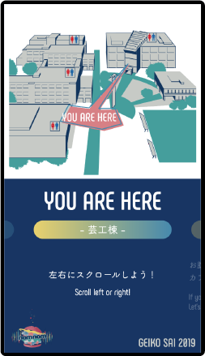

Works
芸工祭2019
デジタルサイネージ


大学祭の案内板として有志のグループで制作した、デジタルサイネージです。多くの来場者に見ていただくために、入り口に設置しました。このデジタルサイネージは来場者の動きに合わせてインタラクティブな動きをするので、体験し楽しみながら催しの内容を知ることができるようになりました。
紹介ムービー完全版はこちら
大学祭で行われている催しを宣伝するとともに、主にオープンキャンパスで訪れた高校生に、芸術工学部での制作活動を体験しより興味を持ってもらうために制作しました。

kinect・processingとWebページをNode.jsのWebSocketでつなぎ、人の動作を検知して画面を操作できるようにしました。私はNode.jsの部分とWebページのコーディングを担当しました。制作期間が短かったため、自分たちの持っているスキルの範囲で最大限のパフォーマンスができるように使うツールを選びました。
平常時は大学祭の紹介動画を流し、来場者が近づくと会場案内に切り替わります。会場案内画面では手を左右に動かして、催しの案内を切り替えます。
また、説明なしでも操作が直感的にできることを意識してこれらのデザイン・アニメーションにしました。
■ 手の動かす向きと画面の動く向きを同じようにする
■ 横に控えている他の案内を少し見せておく
■ 一定時間、手の動きがなかったら矢印の案内を表示する
■ 会場マップの切り替え時にも動きを取り入れる